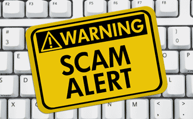

ALERT CENTER- PREFERENCES
- If you want to receive alerts sent as Emails, Text Messages and/or Push Notifications, you will need to set up preferences and add your appropriate contact information.
- For example, you will need to enter a valid mobile phone number to receive text message alerts. Similarly, you will need to enter a valid email address to receive email alerts.
- If you only want to receive Alerts to your Alert Inbox in Online Banking and RBC Mobile, select �Add Alerts� beside each of your accounts.
- For push notifications, download latest version of RBC Mobile and make sure your device settings allow push notifications. The first time you launch RBC Mobile after downloading the latest version, you will be asked whether or not you would like to receive notifications. Select �OK�. If you want to stop receiving alerts on your mobile device, you can turn them off at any time by going to your device�s settings and selecting your notification preferences.
Other Features:
>
- Do Not Disturb
- You can specify a time frame during which we will not send you alerts. This might be useful, for example, in the middle of the night. Alerts that are to be sent while you have the Do Not Disturb feature on will be sent to you during the times you have defined.
Suspend Alerts
- You can specify a date range during which we will not send you alerts. This might be useful if you�ll be away on vacation or unable to check emails/your mobile phone. Alerts that are to be sent while you have the Suspend Alerts feature on will not be sent to you later.
Alert Centre � Alerts
- Stay in control of your finances with Alerts to your email address or mobile device. Below are some of the Alerts you can receive:
Purchases
- Let us notify you when certain purchases are made on your banking and credit card accounts.
Low Account Balance and Credit Limit Reached
- Be notified when your bank account balance dips too low or your credit card balance rises too high, based on the limits you have set. Use these alerts to manage your cash flow.
Credit Card Payment Due / Credit Card Payment Received
- Avoid late credit card payments with the Bill Payment Reminder alert so you�ll never be late for another payment. Receive automated reminders and confirmations each month � never be late with another payment.
myFinanceTracker� Alerts
- Stay alerted on your budgets, net worth changes, manage your expenses, and more, according to your preferences in the myFinanceTracker service.